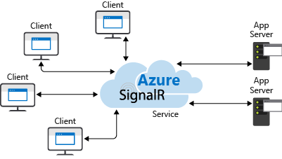

SIGNALR DE ASP.NET ES UNA BIBLIOTECA PARA LOS DESARROLLADORES DE ASP.NET QUE PERMITE AGREGAR FUNCIONALIDAD WEB EN TIEMPO REAL A LAS APLICACIONES. PUEDE AÑADIR CUALQUIER TIPO DE FUNCIONALIDAD WEB EN TIEMPO REAL A UNA APLICACIÓN ASP.NET.

FUNICONES
LA ADMINISTRACIÓN DE CONEXIONES Y PERMITE DIFUNDIR MENSAJES A TODOS LOS CLIENTES CONECTADOS DE FORMA SIMULTÁNEA
UNA FUNCION QUE ADMITE ES EL "SERVER PUSH", LA QUE EL CÓDIGO DE SERVIDOR PUEDE LLAMAR AL CÓDIGO DE CLIENTE EN EL EXPLORADOR MEDIANTE LLAMADAS A PROCEDIMIENTOS REMOTOS (RPC), EN LUGAR DEL MODELO DE SOLICITUD-RESPUESTA HABITUAL EN LA WEB EN LA ACTUALIDAD.
¿QUE OFRECE?
LA LATENCIA MÁS BAJA
LAS CARACTERÍSTICAS MÁS SUBYACENTES, COMO LA COMUNICACIÓN DÚPLEX COMPLETA ENTRE EL CLIENTE Y EL SERVIDOR
LOS REQUISITOS MÁS ESTRICTOS, YA QUE WEBSOCKET REQUIERE QUE EL SERVIDOR
SE EJECUTE EN WINDOWS SERVER 2012 O WINDOWS 8.NET FRAMEWORK 4.5.